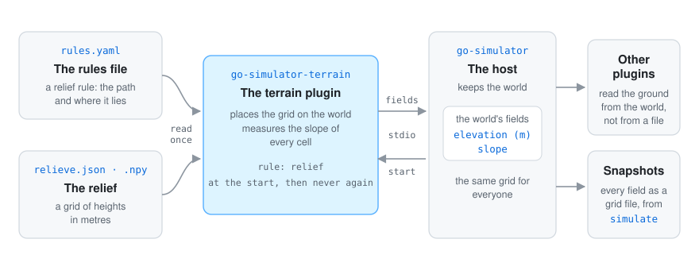
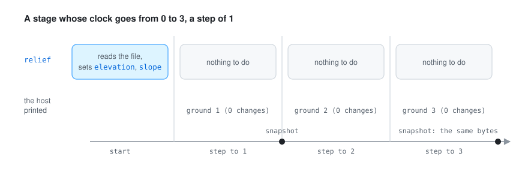

go-simulator is the host. It keeps the world and moves the clock. The terrain plugin is a separate program the host starts; they talk over standard input and output (go-simulator’s protocol).
relief, its parameters, that it reads
nothing from other plugins and that it writes elevation and slope. That description is also
where the rules reference comes from.elevation and slope, instead of
loading the file themselves. Put the terrain plugin first: plugins start in order, so the ones
after it find the ground already there.A plugin never touches the renderer: it reads its copy of the world and answers with changes (go-simulator’s writing plugins). Fields are in physical units and shapes in world units, as go-simulator’s vocabulary lists.

On its own the ground does not change with time. The relief rule publishes it once, when the
stage starts, so every plugin has it before its first step; if a host did not call the start, the
first step publishes it instead. Every later step answers with nothing. The
erosion rule, put after it, is the one that changes the ground over the steps.
The picture is a real run: a stage from 0 to 3 with the island of the other pages, where
simulate printed 0 changes for every step and the snapshots taken after steps 1 and 3 hold
byte-identical fields.
The pictures of the island (the map at the top of the README, the two fields, and the profile along
A–B) were drawn from the plugin’s own answers. A small throwaway program, kept outside the
repository, wrote a made-up island as a relieve.json and relieve.f32, 160 × 110 cells of 50 m,
from a few smooth hills and some noise, and the same heights as a .npy. go-simulator’s simulate
ran the real plugin on both, and a second throwaway program drew the snapshot files it wrote:
the elevation shaded and coloured by height with a line every 50 m, the slope on its own scale, and
one row of both as a profile.
The maps are PNG pairs, one for light and one for dark mode; the profile is an SVG with its own light and dark colours. They are 2D drawings, not screenshots of go-simulator’s viewer: the viewer draws the scene’s own ground, not these fields. The diagrams (how it fits, the slope of a row, placing a relief, the steps) were drawn by hand in the same style; the numbers in the slope diagram were checked against the plugin’s own code. The older island further down reliefs and fields comes from the earlier docs.